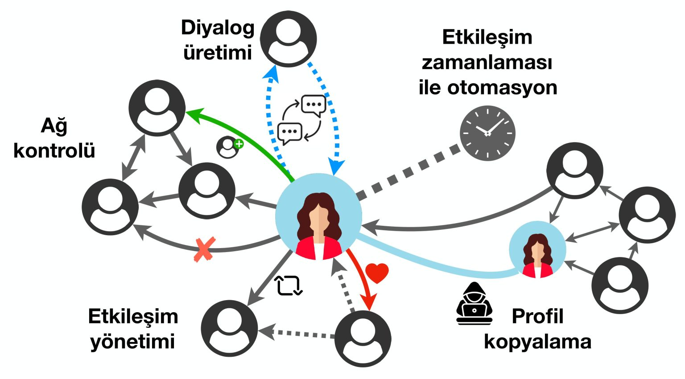
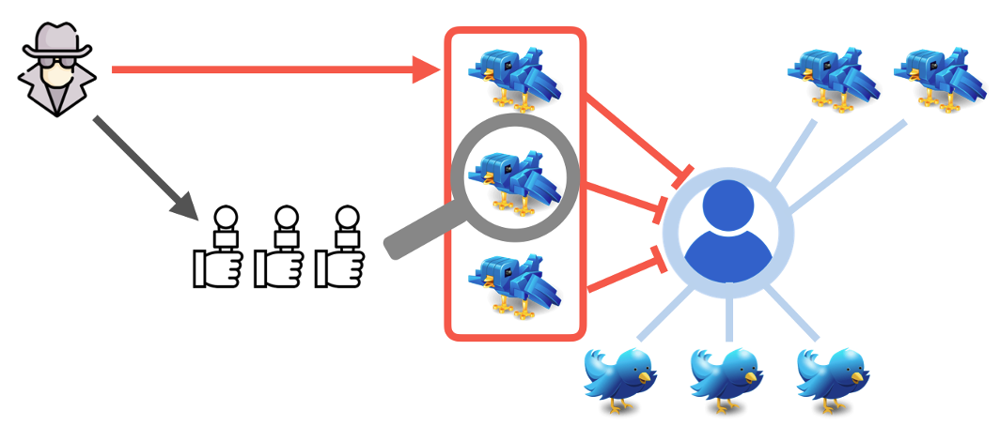

Videos
TÜBİTAK 2247D
project report video
#Secim2023 project
video by Sabanci University
Podcasts
Articles and News
This started a collaboration to write a series of articles about Covid-19 perception in Turkey. We are primarily investigating the actors, audience and the mechanisms used to spread vaccine misinformation.
🦠 Covid-19 aşıları toplum ve medya tarafından nasıl algılanıyor?
💊 Türkiye'de aşı dezenformasyonu: Yanlış bilgiyi kimler yayıyor, ilişki ağları ne?

Sosyal botlar ve dezenformasyon kampanyaları nedir?
Sarkaç için hazırladığım yazıya
linkten ulaşabilirsiniz
.

Çevrimiçi manipülasyon nasıl incelenmeli ve yorumlanmalı
Sarkaç için hazırladığım yazıya
linkten ulaşabilirsiniz
.